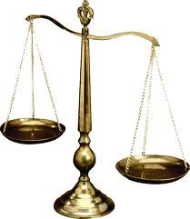
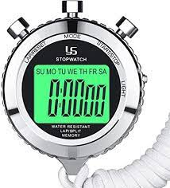
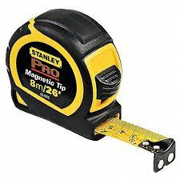
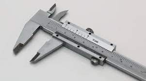
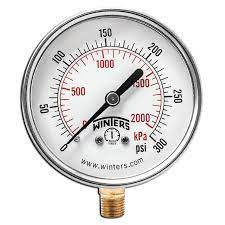
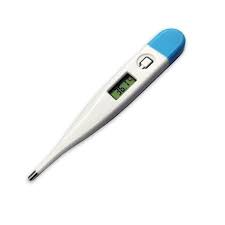
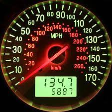
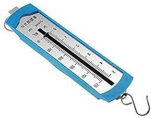

| Nombre del Instrumento | Imagen | Magnitud | Unidades de Medida del Instrumento | Ejemplos de uso en la vida cotidiana |
|---|---|---|---|---|
| Balanza |  | Sirven para pesar o medir la masa de un cuerpo o sustancia. | kg (Kilogramo), g (gramo), mg (miligramo). | Las balanzas de cocina, las de los supermercado o incluso las de pesar personas. |
| Cronometro |  | Sirve para medir fracciones de tiempo, normalmente cortos y con exactitud. | Mayormente en segundos, aunque se puede utilizar para minutos e incluso horas. | Lo usas para tomar el tiempo de una carrera o saber cuanto duras en hacer algo, etc. |
| Flexometro |  | Sirve para medir longitudes en superficies rectas o curvas. | Se puede medir en centimetros, medio centimetro, pulgadas, medias pulgadas y cuartos de pulgadas, etc. | Para saber cuanto mide un trozo de madera, o el alto de una puerta o pared. |
| Calibrador |  | Sirven para el ajuste, la medición y la calibración de tensión, impulsos, corriente, resistencia y señales de frecuencia. | Permite apreciar longitudes de 1/10, 1/20 y 1/50 de milímetro utilizando el nonio. | Utiliza en tornería o mecánica con mucha frecuencia ya que mide profundidad y diámetros internos y externos de piezas con precisión de hasta centésimas de milímetro. |
| Manometro |  | Es un indicador analógico utilizado para medir la presión de un gas o líquido, como agua, aceite o aire. | Las unidades más frecuentes son Kg/cm2, bar, Atm, Pa, PSI. | Las aplicaciones comunes de este instrumento son el flujo, la caída de presión del filtro, las calibraciones del medidor, las pruebas de fugas y el nivel de líquido del tanque. |
| Termometro |  | Se usa para medir la temperatura del aire. | Son los grados Celsius, Fahrenheit y Kelvin. | Para tomar la temperatura de una persona o la temperatura de una lugar o un ambiente. |
| Rapidometro |  | Es un dispositivo de medición que muestra la velocidad real del vehículo. | Se puede medire en km/h (kilometros por hora) o m/h (millas por hora). | Para saber la velocidad que vas manejando. |
| Diamometro |  | Para medir fuerzas, con base en la deformación elástica de un resorte calibrado. | Unidades N, kg y lb. | Para fabricaion de basculas, etc. |